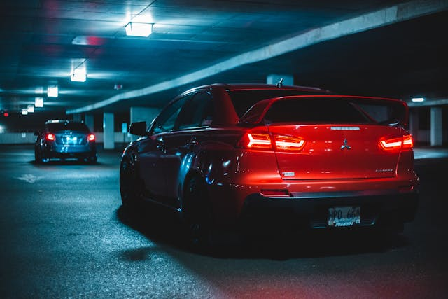
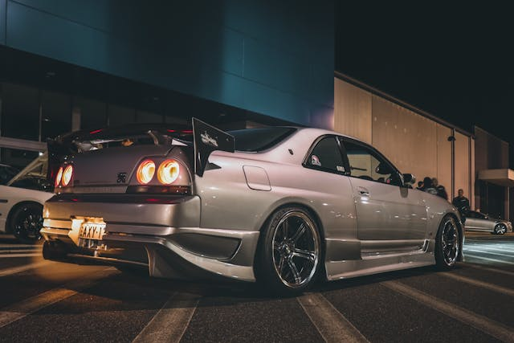
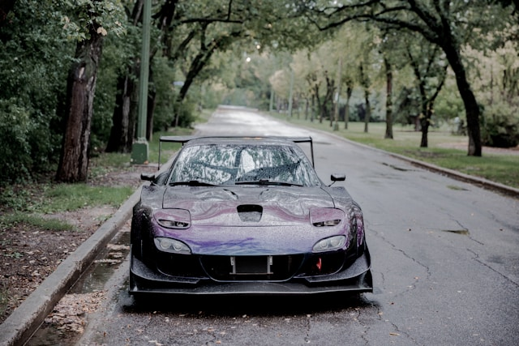

Mitsubishi Lancer Evolution was introduced on the 2006, the Evo IX was offered as a four wheel drive performance car fitted with a turbocharged 2.0L inline four engine. Although the Evolution had always been sold as a sedan.
The R32 GT-R was offered exclusively in the two door coupe body style and featured Nissan's HICAS four wheel steering system. In addition to four wheel steering, the GT-R was fitted with the performance-focused ATTESA all wheel drive system. For all of the GT-R's performance upgrades, the most well known and respected is the RB26DETT engine. This twin turbocharged 2.6L inline six was rated at 276hp.
The Mazda RX-7 is a two-seat sports car manufactured between 1979 and 2002 that is unique primarily due to the choice of engine — rather than the typical piston engine, the RX-7 uses Mazda's rotary (Wankel) engine.
